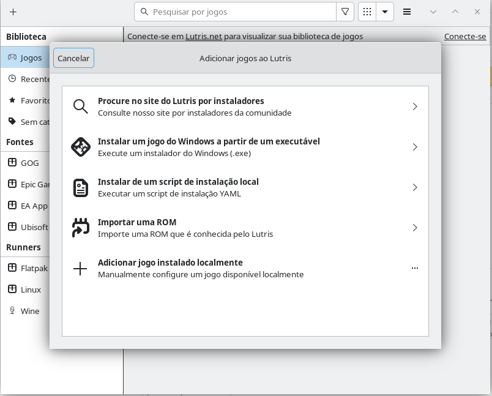
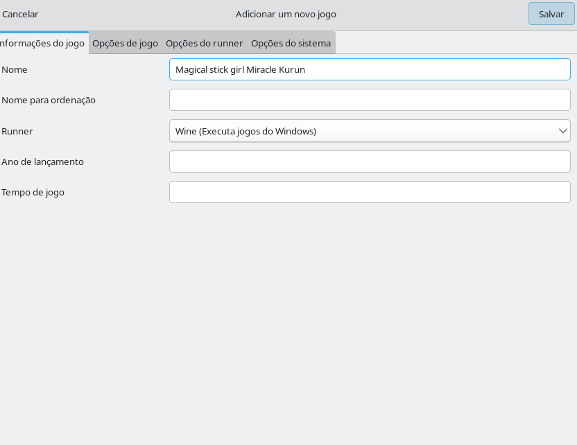
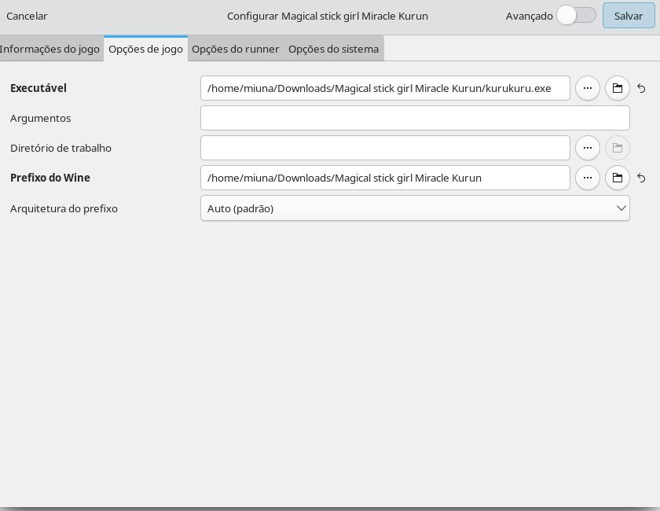
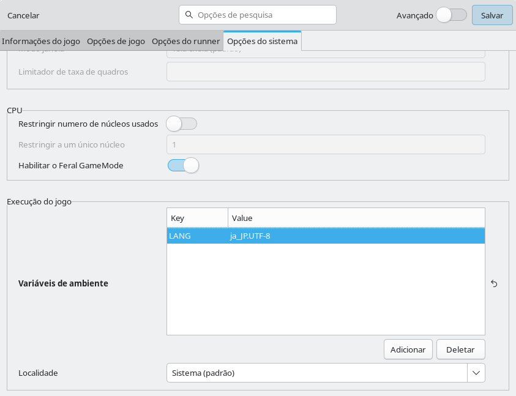
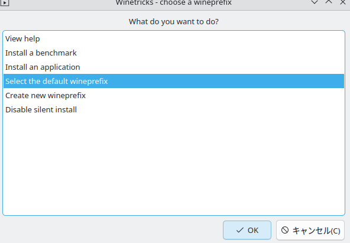
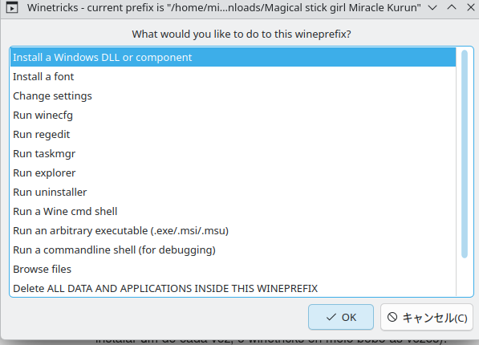
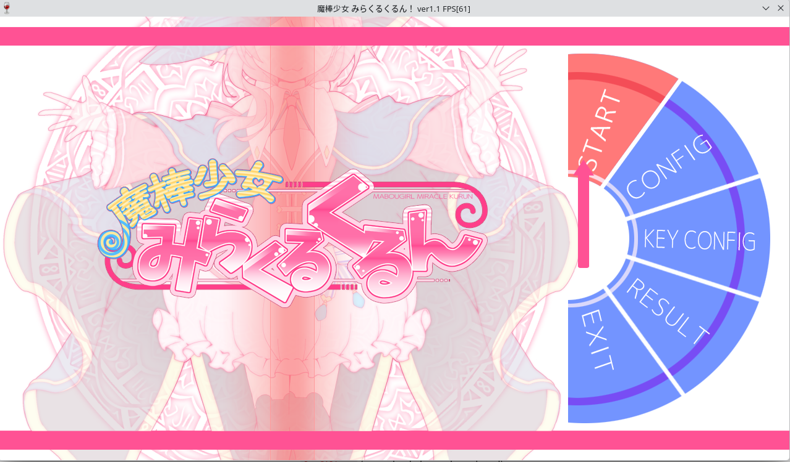

Comprei o jogo 魔棒少女みらくるくるん.
Instalando no Lutris
-
instala o lutris (se vc nao tem ainda).
- clica no
+(la em cima) e "adicionar jogo instalado localmente".

- preenche o nome e escolhe "wine" como "executor".

- na aba "Opções do Jogo", vc aponta pra onde ta o arquivo
.exeq vc baixou.

- essa eh a parte importante: vai na aba "Opções do Sistema".
- la em baixo, vai ter "Variáveis de Ambiente".
- clica em "adicionar" e coloca isso:
- Chave:
LANG - Valor:
ja_JP.UTF-8
- Chave:

pronto! qnd vc abrir o jogo pelo lutris, ele vai "fingir" q seu pc ta em japones so praquele jogo!
se vc nao for usar o lutris, vc pode fazer isso pelo terminal tbm:
LANG=ja_JP.UTF-8 wine /caminho/para/seu/jogo.exe2. Instalar as Fontes Japonesas (pro seu Linux)
alem disso, seu linux precisa ter as fontes (letras) japonesas! senao, mesmo q o wine faca certo, o sistema nao sabe "desenhar" os kanjis e hiraganas.
- se vc usa ubuntu, mint ou debian:
sudo apt install fonts-noto-cjk - se vc usa arch ou manjaro:
sudo pacman -S noto-fonts-cjk - se vc usa fedora:
sudo dnf install google-noto-cjk-fonts
Solução: Instalar Codecs (Winetricks)
no meu caso, deu "tela preta + musica tocando". eh o sintoma mais classico do mundo de falta de codecs de video! (¬‿¬)
o lutris deixa isso facil!
- no lutris, acha seu jogo na lista.
- clica nele com o botao direito >
Winetricks. - uma janelinha vai abrir. escolhe
Select the default wineprefix(ja deve ta marcado) >OK.

- na proxima janela, escolhe
Install a Windows DLL or component>OK.

- agora vai abrir uma lista gigante.
- a gente precisa instalar os codecs de video. procura e marca esses (vc talvez tenha q instalar um de cada vez):
lavfilters(esse eh mto bom, eh moderno!)k-lite_codec_pack(esse eh um pacotao classico, deve ter oq precisa)wmp10(ouwmp9) (instala o windows media player, muitos jogos japoneses antigos usam isso)- (aproveita e instala tbm
d3dx9ed3dcompiler_43, eh sempre bom pra jogos assim)
depois de instalar, fecha tudo e tenta abrir o jogo de novo!
